Induction range induction_range procedural, this project
4 tasks · 12 videos · 19 movable parts · 12 contact-tested keys · 24 hand anchors
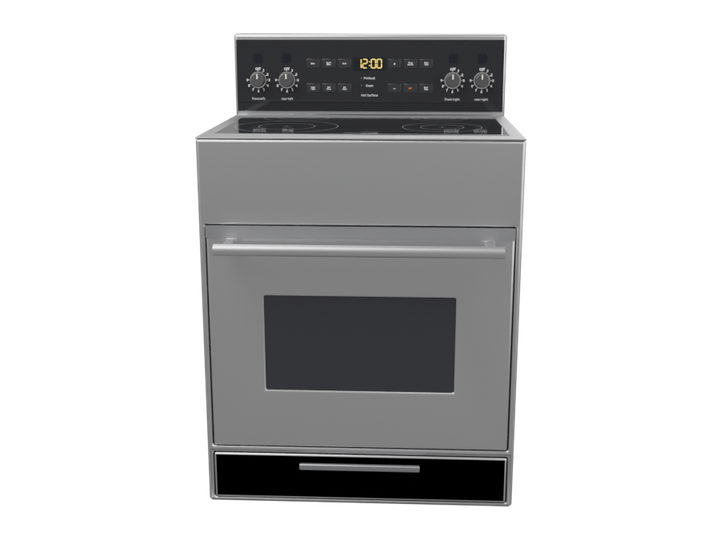
front: cooktop, control panel, oven door, drawer 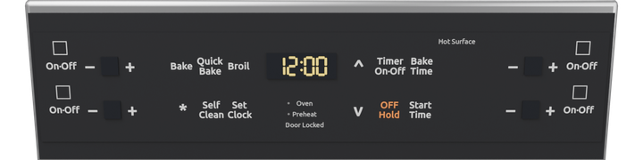
control panel: four zone knobs with level displays, twelve oven keys, oven display 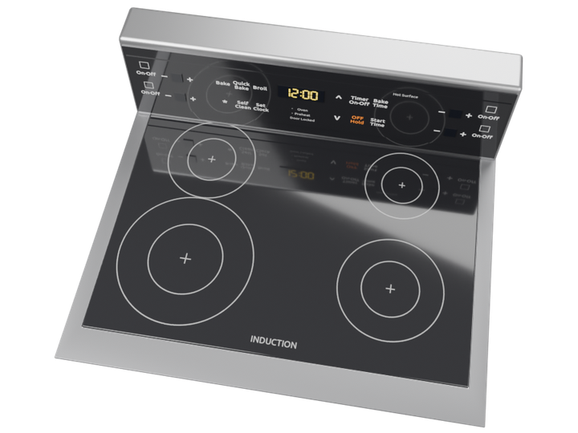
cooktop: four printed zones (front-left glowing) Tasks and videos
One block per task: the three camera videos of its recorded run (external, first-person, hand close-up), the phases it consists of, the step timeline and the key contacts measured in MuJoCo. Click a timeline bar or a keyframe to jump the videos there.
range_bake induction_range · 17.4 s · 18 steps · hands: left, right 3/3 key presses contact-tested ✓ set the oven to bake
range_bake · external camera · 17.4 srange_bake · first-person camera · 17.4 srange_bake · hand close-up camera · 17.4 s
▶ play all three pause ↺ restart
settle press key_bake press key_up wait · display, interior_light
gaze left hand right hand body device 0s 5s 10s 15s settle · idle · 0.0–1.0 s · kinematic look_bake · look_at · 1.0–1.6 s · kinematic reach_bake · reach left · 1.0–2.8 s · kinematic reach_bake align_bake · pregrasp left · 2.8–3.4 s · kinematic press_bake · press left · 3.4–4.1 s · contact_dynamics lift_bake · release left · 4.1–4.5 s · kinematic look_up · look_at · 4.5–5.0 s · kinematic reach_up · reach right · 4.5–6.0 s · kinematic reach_up align_up · pregrasp right · 6.0–6.7 s · kinematic press_up_1 · press right · 6.7–7.4 s · contact_dynamics lift_up_1 · release right · 7.4–7.7 s · kinematic align_up_2 · pregrasp right · 7.7–8.2 s · kinematic press_up_2 · press right · 8.2–8.9 s · contact_dynamics release_up · release right · 8.9–9.4 s · kinematic right_back_1 · retreat right · 9.4–10.8 s · kinematic right_back_1 left_back_1 · retreat left · 10.8–11.8 s · kinematic preheat · idle · 10.8–15.8 s · kinematic preheat end · idle · 15.8–17.4 s · kinematic end display · illustrative_effect display interior_light · illustrative_effect interior_light contact_start @ 3.69 s (key_bake, measured) button_activated @ 3.73 s (key_bake, measured) button_released @ 4.17 s (key_bake, measured) contact_end @ 4.19 s (key_bake, measured) contact_start @ 6.99 s (key_up, measured) button_activated @ 7.03 s (key_up, measured) button_released @ 7.48 s (key_up, measured) contact_end @ 7.48 s (key_up, measured) contact_start @ 8.54 s (key_up, measured) button_activated @ 8.58 s (key_up, measured) button_released @ 9.04 s (key_up, measured) contact_end @ 9.04 s (key_up, measured) 0.4 s · settle 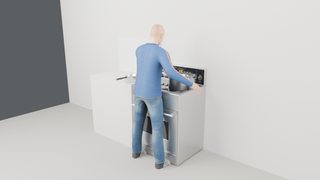
2.4 s · press key_bake 7.0 s · press key_up 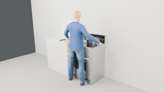
13.5 s · wait · display, interior_light
range_boil induction_range · 40.4 s · 27 steps · hands: left heat a saucepan on the induction range
range_boil · external camera · 40.4 srange_boil · first-person camera · 40.4 srange_boil · hand close-up camera · 40.4 s
▶ play all three pause ↺ restart
settle move saucepan → zone_fl rotate knob_fl wait · fx_zone_fl, fx_steam_fl, display rotate knob_fl move saucepan → home: saucepan
gaze left hand right hand body device 0s 5s 10s 15s 20s 25s 30s 35s 40s settle · idle · 0.0–1.0 s · kinematic look_pan · look_at · 1.0–1.6 s · kinematic pan_to_zone · pick_place left · 1.0–7.0 s · assisted_grasp pan_to_zone left_back_0 · retreat left · 7.0–8.2 s · kinematic look_knob · look_at · 8.2–8.8 s · kinematic reach_knob · reach left · 8.2–9.9 s · kinematic pinch_knob · pregrasp left · 9.9–10.6 s · kinematic turn_1 · rotate left · 10.6–11.8 s · assisted_grasp regrip_1 · release left · 11.8–12.3 s · kinematic pinch_knob_2 · pregrasp left · 12.3–12.9 s · kinematic turn_2 · rotate left · 12.9–14.1 s · assisted_grasp release_knob · release left · 14.1–14.6 s · kinematic left_back_1 · retreat left · 14.6–16.0 s · kinematic heat · idle · 16.0–24.0 s · kinematic heat look_knob_2 · look_at · 24.0–24.5 s · kinematic reach_knob_2 · reach left · 24.0–25.6 s · kinematic pinch_knob_3 · pregrasp left · 25.6–26.2 s · kinematic turn_3 · rotate left · 26.2–27.4 s · assisted_grasp regrip_2 · release left · 27.4–27.9 s · kinematic pinch_knob_4 · pregrasp left · 27.9–28.6 s · kinematic turn_4 · rotate left · 28.6–29.8 s · assisted_grasp release_knob_2 · release left · 29.8–30.3 s · kinematic left_back_2 · retreat left · 30.3–31.7 s · kinematic look_pan_2 · look_at · 31.7–32.2 s · kinematic pan_back · pick_place left · 31.7–37.7 s · assisted_grasp pan_back left_back_3 · retreat left · 37.7–38.9 s · kinematic end · idle · 38.9–40.4 s · kinematic display · illustrative_effect display fx_steam_fl · illustrative_effect fx_steam_fl fx_zone_fl · illustrative_effect fx_zone_fl
range_set_clock induction_range · 14.7 s · 20 steps · hands: left, right 4/4 key presses contact-tested ✓ set the oven clock
range_set_clock · external camera · 14.7 srange_set_clock · first-person camera · 14.7 srange_set_clock · hand close-up camera · 14.7 s
▶ play all three pause ↺ restart
settle press key_set_clock press key_up wait · display
gaze left hand right hand body device 0s 5s 10s settle · idle · 0.0–1.0 s · kinematic settle look_clock · look_at · 1.0–1.6 s · kinematic reach_clock · reach left · 1.0–2.8 s · kinematic reach_clock align_clock · pregrasp left · 2.8–3.4 s · kinematic press_clock · press left · 3.4–4.1 s · contact_dynamics lift_clock · release left · 4.1–4.5 s · kinematic look_up · look_at · 4.5–5.0 s · kinematic reach_up · reach right · 4.5–6.0 s · kinematic reach_up align_up · pregrasp right · 6.0–6.7 s · kinematic press_up_1 · press right · 6.7–7.4 s · contact_dynamics lift_up_1 · release right · 7.4–7.7 s · kinematic align_up_2 · pregrasp right · 7.7–8.2 s · kinematic press_up_2 · press right · 8.2–8.9 s · contact_dynamics lift_up_2 · release right · 8.9–9.3 s · kinematic align_down · pregrasp right · 9.3–10.1 s · kinematic press_down · press right · 10.1–10.8 s · contact_dynamics release_down · release right · 10.8–11.3 s · kinematic right_back · retreat right · 11.3–12.7 s · kinematic right_back clock_set · idle · 12.7–14.7 s · kinematic clock_set left_back · retreat left · 12.7–13.7 s · kinematic left_back display · illustrative_effect display contact_start @ 3.69 s (key_set_clock, measured) button_activated @ 3.73 s (key_set_clock, measured) button_released @ 4.17 s (key_set_clock, measured) contact_end @ 4.19 s (key_set_clock, measured) contact_start @ 6.99 s (key_up, measured) button_activated @ 7.03 s (key_up, measured) button_released @ 7.48 s (key_up, measured) contact_end @ 7.48 s (key_up, measured) contact_start @ 8.54 s (key_up, measured) button_activated @ 8.58 s (key_up, measured) button_released @ 9.02 s (key_up, measured) contact_end @ 9.04 s (key_up, measured) contact_start @ 10.39 s (key_down, measured) button_activated @ 10.43 s (key_down, measured) button_released @ 10.89 s (key_down, measured) contact_end @ 10.89 s (key_down, measured) 0.4 s · settle 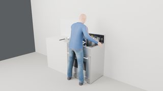
2.4 s · press key_set_clock 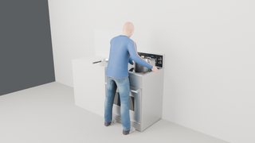
7.8 s · press key_up 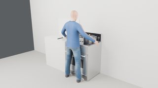
13.5 s · wait · display
range_stockpot induction_range · 29.1 s · 27 steps · hands: right the stockpot already stands on the front-right zone
range_stockpot · external camera · 29.1 srange_stockpot · first-person camera · 29.1 srange_stockpot · hand close-up camera · 29.1 s
▶ play all three pause ↺ restart
settle rotate knob_fr wait · fx_zone_fr, display rotate knob_fr
gaze left hand right hand body device 0s 5s 10s 15s 20s 25s settle · idle · 0.0–1.0 s · kinematic look_knob · look_at · 1.0–1.6 s · kinematic reach_knob · reach right · 1.0–2.8 s · kinematic pinch_knob · pregrasp right · 2.8–3.4 s · kinematic turn_1 · rotate right · 3.4–4.5 s · assisted_grasp regrip_1 · release right · 4.5–5.0 s · kinematic pinch_knob_2 · pregrasp right · 5.0–5.7 s · kinematic turn_2 · rotate right · 5.7–6.8 s · assisted_grasp regrip_2 · release right · 6.8–7.2 s · kinematic pinch_knob_3 · pregrasp right · 7.2–7.9 s · kinematic turn_3 · rotate right · 7.9–9.0 s · assisted_grasp release_knob · release right · 9.0–9.5 s · kinematic right_back_1 · retreat right · 9.5–10.9 s · kinematic heat · idle · 10.9–17.9 s · kinematic heat look_knob_2 · look_at · 17.9–18.4 s · kinematic reach_knob_2 · reach right · 17.9–19.4 s · kinematic pinch_knob_4 · pregrasp right · 19.4–20.1 s · kinematic turn_4 · rotate right · 20.1–21.2 s · assisted_grasp regrip_3 · release right · 21.2–21.7 s · kinematic pinch_knob_5 · pregrasp right · 21.7–22.3 s · kinematic turn_5 · rotate right · 22.3–23.4 s · assisted_grasp regrip_4 · release right · 23.4–23.9 s · kinematic pinch_knob_6 · pregrasp right · 23.9–24.6 s · kinematic turn_6 · rotate right · 24.6–25.7 s · assisted_grasp release_knob_2 · release right · 25.7–26.2 s · kinematic right_back_2 · retreat right · 26.2–27.6 s · kinematic end · idle · 27.6–29.1 s · kinematic display · illustrative_effect display fx_zone_fr · illustrative_effect fx_zone_fr 0.4 s · settle 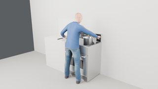
5.0 s · rotate knob_fr 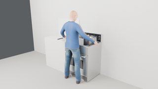
13.7 s · wait · fx_zone_fr, display 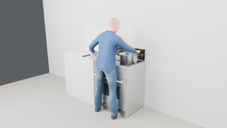
22.4 s · rotate knob_fr Movable parts Device shown open. Numbered markers sit on the coloured parts; the table gives joint type, travel and the mechanism label used in the runs.
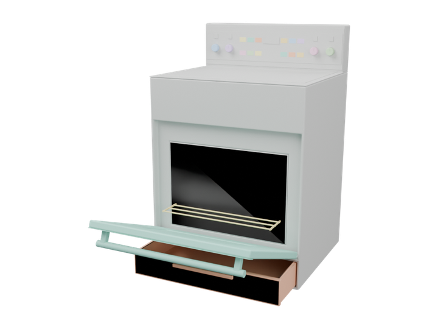
oven_door 1 drawer 2 rack 3 knob_fl 4 knob_rl 5 knob_fr 6 knob_rr 7 key_bake 8 key_quick_bake 9 key_broil 10 key_up 11 key_timer 12 key_bake_time 13 key_light 14 key_self_clean 15 key_set_clock 16 key_down 17 key_off 18 key_start_time 19 induction_range joint travel mechanism 1 ↻ hinge 83° assisted_grasp 2 ↔ slide 300 mm assisted_grasp 3 ↔ slide 250 mm assisted_grasp 4 ↻ hinge 270° assisted_grasp 5 ↻ hinge 270° assisted_grasp 6 ↻ hinge 270° assisted_grasp 7 ↻ hinge 270° assisted_grasp 8 ↔ slide 1.5 mm contact_dynamics 9 ↔ slide 1.5 mm contact_dynamics 10 ↔ slide 1.5 mm contact_dynamics 11 ↔ slide 1.5 mm contact_dynamics 12 ↔ slide 1.5 mm contact_dynamics 13 ↔ slide 1.5 mm contact_dynamics 14 ↔ slide 1.5 mm contact_dynamics 15 ↔ slide 1.5 mm contact_dynamics 16 ↔ slide 1.5 mm contact_dynamics 17 ↔ slide 1.5 mm contact_dynamics 18 ↔ slide 1.5 mm contact_dynamics 19 ↔ slide 1.5 mm contact_dynamics 20 ✦ effect illustrative_effect 21 ✦ effect illustrative_effect 22 ✦ effect illustrative_effect 23 ✦ effect illustrative_effect 24 ✦ effect illustrative_effect 25 ✦ effect illustrative_effect 26 ✦ effect illustrative_effect